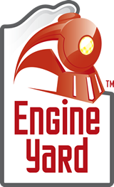

Interested in sponsoring the conference? Download the prospectus.
Gold Sponsor
Founded in 2005, Mozy is the world’s most trusted online backup service for consumers and small businesses with more than 1 million customers and 50,000 business customers backing up 25+ petabytes of information to multiple data centers around the globe.
Mozy is owned by EMC Corporation, a Fortune 500 company. We're headquartered in Seattle, Washington with offices in Pleasant Grove, Utah; London, England; Shanghai, China; Montreal, Canada; and Bangalore, India.
We believe:
- You shouldn't have to think about backup.
Backup should be set up once, and then work automatically. - Your files should be encrypted.
Your backup files should be encrypted and stored in a secure, remote location that's only accessible to you — from anywhere. - Your backups should be smart.
Your backup system should be smart enough to only back up data that's not already been backed up, only back up parts of a file that have changed, and be able to back up open and locked files.
Alliance Health is based in Salt Lake City and we're building a universe of social networking sites that unite individuals, caregivers, and healthcare providers living and working with specific diseases and medical conditions. These social health networks are an invaluable online resource by providing health information centered on the consumer and a specific condition.
Condition-specific social health networks enable individuals living with certain conditions to help others with similar issues by providing them with a platform for sharing ideas, information and insights. Alliance health has attracted the largest online population of people living with diabetes and we're continuing this growth into other disease categories. We love Ruby and we're always on the lookout for talented Rubyists to join our team.
Silver Sponsors
 Engine Yard provides automation technologies and services for Ruby on Rails, including Engine Yard Cloud, an application services platform for web developers and web teams. It provides easy-to-use, automated Rails application deployment and management, with a design philosophy that allows easy migration of existing applications. Engine Yard employs top industry experts and sponsors or contributes to many Open Source projects and efforts such as Ruby on Rails, JRuby and Rubinius. Headquartered in San Francisco, Engine Yard is backed by Benchmark Capital, New Enterprise Associates, and Amazon.com. Visit www.engineyard.com, twitter.com/engineyard.
XMission – Utah's first Internet service provider - delivers high-speed connections, voice, hosting and colocation to residents and businesses across the West. XMission provides unmatched service backed by a robust network and 24/7 expert technical support. As a local, independent ISP, XMission also proudly supports a number of community events including Ignite Salt Lake, the Utah Arts Festival, the Utah Open Source Conference, and MountainWest RubyConf. For more info, please visit us at xmission.com
Test drive XMission's new, national web hosting project, Stackable.
Integrum emphasizes business value, speed to market and open communication to build remarkable Ruby on Rails web applications. Integrum has worked with organizations of all sizes, from startups to the enterprise. We utilize Agile software development methodologies and powerful tools to deliver your project on time, and on budget.
Pivotal Labs is a recognized leader in agile development. Our Rails practice has delivered more than 80 client products in the last four years, applying agile techniques to accelerate development, reduce risk, and increase responsiveness to market trends. And Pivotal doesn't just deliver a great product, we also equip our clients to execute on their own, giving them the tools and techniques they need to continue to excel. We have over 75 talented and enthusiastic people in our San Francisco and New York offices, with new opportunities in the Mountain West region.
Sorenson Media offers comprehensive, award-winning solutions that empower businesses to easily and affordably publish the highest-quality video. Included among its services are the Sorenson 360 Video Delivery Network (VDN), Sorenson Media’s re-imagined video publishing platform; Sorenson Squeeze, the gold-standard for video encoding applications; Sorenson Squish and SquishNet, which together create an easy-to-use browser-based video publishing platform for user-generated content; Sorenson Spark, the industry’s most widely used video codec, and Sorenson API’s that enable developers to customize video solutions.
Since its inception in 1995, Sorenson Media has been instrumental in bringing Internet video to a worldwide audience.
AT&T Interactive is devoted to creating compelling experiences that connect people, businesses and places so everyone can more easily engage with their world, wherever they work, live or play.
We have a passion for the Internet, mobile applications and emerging media platforms, and are proud to nourish a collaborative, tech-driven culture that promotes innovation, the entrepreneurial spirit and a desire to enhance everyone's daily lives.
As a tech-driven company, AT&T Interactive is always looking for passionate talented individuals who can solve difficult problems and develop new and existing products to exceed consumer expectations and drive value for our advertisers - whether it's online, mobile, interactive TV, video or other media platforms.
About
The single-track conference is two full days for just $100. It is a terrific opportunity to rub elbows with some of the smartest Rubyists around. We have a great list of presenters with compelling presentations.
March 11-12, 2010
Salt Lake City Public Library
210 E 400 S
Salt Lake City, UT 84111
[map]
Gold Sponsors
Silver Sponsors


Links
MountainWest RubyConf is brought to you by MountainWest Ruby, LLC. We are committed to promoting and supporting the Ruby community.